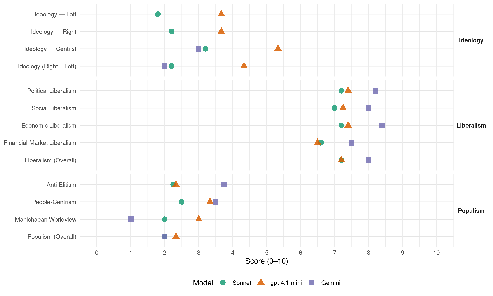

PSD (Portugal, 2022)
manifesto_id 35313_202201
Get full text: This site shows derived annotations and short verbatim quotes only. The full manifesto text is © Manifesto Project / WZB — obtain it via manifesto-project.wzb.eu using the manifesto_id above.
Headline scores
| Dimension | Sonnet | gpt-4.1-mini | Gemini |
|---|---|---|---|
| Populism (Overall) | 2.0 | 2.3 | 2.0 |
| Anti-Elitism | 2.2 | 2.3 | 3.8 |
| People-Centrism | 2.5 | 3.3 | 3.5 |
| Manichaean Worldview | 2.0 | 3.0 | 1.0 |
| Ideology (Right − Left) | 2.2 | 4.3 | 2.0 |
| Liberalism (Overall) | 7.2 | 7.2 | 8.0 |
| Political Liberalism | 7.2 | 7.4 | 8.2 |
| Social Liberalism | 7.0 | 7.2 | 8.0 |
| Economic Liberalism | 7.2 | 7.4 | 8.4 |
| Financial-Market Liberalism | 6.6 | 6.5 | 7.5 |
Evidence per dimension
Economic Liberalism
Gemini · score 9.0 · verified · chunk 1
“Reduzir a taxa de IRC de 21% para 17%”
Impostos e carga fiscal Reduzir a taxa de IRC de 21% para 17% (2 p.p. em 2023 e 2 p.p. em 2024).
Gemini · score 9.0 · verified · chunk 2
“concorrência nos mercados de produto”
fundamental para uma economia mais competitiva que exista concorrência nos mercados de produto, flexibilidade no mercado
Gemini · score 8.0 · verified · chunk 3
“mobilização acrescida da iniciativa privada”
processo de extensão da plataforma continental), face às oportunidades, face aos direitos, face às obrigações, pelos deveres consagrados internacionalmente e, pela obrigação de concretizar o potencial do vasto Mar como suporte estrutural de prosperidade dos Portugueses. Este caminho terá de ser suportado e alavancado através da adequação da estrutura, eficiência e eficácia da Administração Pública em geral, da Diplomacia em particular, e da mobilização acrescida da iniciativa privada e das organizações
Gemini · score 8.0 · verified · chunk 4
“é a livre iniciativa, o empreendedorismo”
Entendemos que é a livre iniciativa, o empreendedorismo e a classe média, os setores privados, complementados por boas políticas públicas
Gemini · score 8.0 · verified · chunk 5
“Redução da carga fiscal sobre as empresas”
opções disponíveis. Redução da carga fiscal sobre as empresas e as famílias Reforço da transparência
gpt-4.1-mini · score 7.0 · verified · chunk 1
“Reduzir a taxa de IRC de 21% para 17%”
Impostos e carga fiscal Reduzir a taxa de IRC de 21% para 17% (2 p.p. em 2023 e 2 p.p. em 2024). Alargar essa redução à taxa reduzida para as PME´s (aumentando o limite de 25 mil € para 100 mil para as empresas sediadas no interior). Rever substancialmente o IRC, simplificando e introduzindo medidas de competitividade fiscal.
gpt-4.1-mini · score 8.0 · verified · chunk 2
“competitividade da economia Portuguesa tem de ser a prioridade da atuação de qualquer governo”
A competitividade da economia Portuguesa tem de ser a prioridade da atuação de qualquer governo. Apenas uma economia mais competitiva gerará maior crescimento económico, permitindo mais e melhor emprego, bem como as receitas fiscais necessárias a uma política redistributiva que aumente a justiça social e melhore os serviços públicos.
gpt-4.1-mini · score 7.0 · verified · chunk 3
“Promover a economia circular e uma abordagem consistente das questões ambientais”
Promover a economia circular e uma abordagem consistente das questões ambientais da agricultura e da pecuária, definindo regras razoáveis que compatibilizem a funcionalidade das explorações com as obrigações decorrentes do cumprimento das normas comunitárias.
gpt-4.1-mini · score 7.0 · verified · chunk 4
“livre iniciativa, empreendedorismo, mercado, concorrência, desregulamentação”
…Entendemos que é a livre iniciativa, o empreendedorismo e a classe média, os setores privados, complementados por boas políticas públicas, que devem ser o “motor” do desenvolvimento económico e social… reforçar os mecanismos dos reguladores, bem como a sua independência…
gpt-4.1-mini · score 8.0 · verified · chunk 5
“Redução da carga fiscal em IRS para as famílias da classe média, através da redução das taxas aplicáveis ao rendimento das pequenas e médias poupanças”
…é essencial aliviar a carga fiscal das famílias, bem como estimular a poupança, através de: Redução do IRS em 400 M€/ano em 2025 e 2026, sendo em cada ano 350 M€ destinados aos escalões de rendimento até 60 mil €/ano e 50 M€ destinados aos escalões de rendimento entre os 60 e os 100 mil €/ano. Redução da carga fiscal em IRS para as famílias da classe média, através da redução das taxas aplicáveis ao rendimento das pequenas e médias poupanças, bem como a dedução à coleta em sede de IRS dos montantes aplicados em PPR e PPR-OICVM…
Sonnet · score 7.0 · verified · chunk 1
“Reduzir a taxa de IRC de 21% para 17%”
Reduzir a taxa de IRC de 21% para 17% (2 p.p. em 2023 e 2 p.p. em 2024). Alargar essa redução à taxa reduzida para as PME´s
Sonnet · score 8.0 · verified · chunk 2
“economia mais competitiva gerará maior crescimento económico”
Apenas uma economia mais competitiva gerará maior crescimento económico, permitindo mais e melhor emprego, bem como as receitas fiscais necessárias
Sonnet · score 7.0 · verified · chunk 3
“promover a adaptação tecnológica da indústria sem distorcer a concorrência”
propomos promover a adaptação tecnológica da indústria sem distorcer a concorrência no mercado interno e a aprofundar o diálogo com os parceiros europeus
Sonnet · score 7.0 · verified · chunk 4
“livre iniciativa, o empreendedorismo e a classe média”
Entendemos que é a livre iniciativa, o empreendedorismo e a classe média, os setores privados, complementados por boas políticas públicas, que devem ser o ‘motor’ do desenvolvimento económico
Sonnet · score 7.0 · verified · chunk 5
“Redução da carga fiscal sobre as empresas”
Redução da carga fiscal sobre as empresas e as famílias. Reforço da transparência orçamental, reduzindo ao máximo eventuais práticas de desorçamentação.
Financial-Market Liberalism
Gemini · score 7.0 · verified · chunk 1
“Reduzir a tributação da poupança”
Reduzir o IRS em 800 M€… Reduzir a tributação da poupança. Reduzir temporariamente (entre julho de 2022 e dezembro de 2023) o IVA da restauração.
Gemini · score 8.0 · verified · chunk 2
“Mercado de Capitais”
sistema financeiro, bancário e do Mercado de Capitais. Entre as Setoriais
Gemini · score 7.0 · verified · chunk 4
“melhoria do acesso ao financiamento com capital de risco”
melhoria dos mecanismos fiscais de estímulo à investigação empresarial; melhoria do acesso ao financiamento com capital de risco; promover o envolvimento de PMEs
Gemini · score 8.0 · verified · chunk 5
“conclusão da União Bancária e da União”
estabilidade da UEM. A conclusão da União Bancária e da União dos Mercados de Capitais é fundamental
gpt-4.1-mini · score 6.0 · verified · chunk 1
“Reforço do papel do Banco de Fomento na capitalização e internacionalização das empresas”
Economia Redução dos custos de contexto e da burocracia e melhoria da Justiça económica e fiscal. Reforço do papel do Banco de Fomento na capitalização e internacionalização das empresas. Programa de captação de grandes projetos industriais.
gpt-4.1-mini · score 7.0 · verified · chunk 2
“Interface com o sistema financeiro, bancário e do Mercado de Capitais”
Entre as Horizontais, dar-se-ia prioridade a: Competitividade e Inovações incrementais promovendo o crescimento sustentado da produtividade; Interface com o Sistema de Ciência e Tecnologia; Digitalização, promovendo o up-grading da existente, e tendo como meta a Revolução 4.0; Capacidade de reação às Alterações Climáticas, em sintonia com a COP 26; Interface com o sistema financeiro, bancário e do Mercado de Capitais.
gpt-4.1-mini · score 6.0 · verified · chunk 4
“reguladores independentes, transparência, supervisão prudencial, mercado financeiro”
…Propor reforço dos mecanismos e meios dos reguladores, bem como a sua independência, transparência nas decisões e maior autonomia orçamental e financeira…
gpt-4.1-mini · score 7.0 · verified · chunk 5
“A conclusão da União Bancária e da União dos Mercados de Capitais é fundamental para alcançar este objetivo”
…A estabilidade financeira foi reforçada na área do Euro. No entanto, existe ainda uma forte ligação entre os bancos e os seus Estados soberanos, bem como níveis elevados de crédito malparado. São necessárias medidas suplementares para reduzir e partilhar os riscos no setor bancário, bem como para oferecer melhores possibilidades de financiamento à economia real, nomeadamente através dos mercados de capitais. A integração e o bom funcionamento do sistema financeiro são essenciais para garantir a eficácia e a estabilidade da UEM. A conclusão da União Bancária e da União dos Mercados de Capitais é fundamental para alcançar este objetivo. Existem também duas outras componentes da União Bancária que continuam por concluir…
Sonnet · score 6.0 · verified · chunk 1
“dificuldades acrescidas nos mercados financeiros”
A desaceleração do crescimento verificado nos países mais desenvolvidos, dificuldades acrescidas nos mercados financeiros e no mercado de trabalho.
Sonnet · score 7.0 · verified · chunk 2
“eficiência e robustez nos mercados financeiros”
É fundamental para uma economia mais competitiva que exista concorrência nos mercados de produto, flexibilidade no mercado laboral e eficiência e robustez nos mercados financeiros.
Sonnet · score 7.0 · verified · chunk 3
“regulação financeira das mesmas”
dotando a APA de meios para as fiscalizar e a ERSAR para atuar na regulação financeira das mesmas, corrigindo, sempre que necessário o seu funcionamento
Sonnet · score 6.0 · verified · chunk 4
“melhoria do acesso ao financiamento com capital de risco”
melhoria dos mecanismos fiscais de estímulo à investigação empresarial; melhoria do acesso ao financiamento com capital de risco; promover o envolvimento de PMEs em projetos de I&D
Sonnet · score 7.0 · verified · chunk 5
“conclusão da União Bancária e da União dos Mercados de Capitais”
A conclusão da União Bancária e da União dos Mercados de Capitais é fundamental para alcançar este objetivo.
Political Liberalism
Gemini · score 9.0 · verified · chunk 1
“funcionamento de um regime democrático é a confiança”
Um dos pilares do funcionamento de um regime democrático é a confiança que os Portugueses têm nas suas instituições.
Gemini · score 8.0 · verified · chunk 2
“reforma profunda dos Tribunais”
defende uma reforma profunda dos Tribunais e meios de litigação económica
Gemini · score 8.0 · verified · chunk 3
“garantindo a independência dos organismos”
separação funcional das atividades de regulamentação e a verificação do seu cumprimento e da regulação, garantindo a independência dos organismos e serão
Gemini · score 8.0 · verified · chunk 4
“sendo o poder legislativo um dos pilares”
Sendo o poder legislativo um dos pilares fundamentais da soberania do Estado é precisamente por aí
Gemini · score 8.0 · verified · chunk 5
“nomeação de diretores-gerais e de presidentes”
proporá que a nomeação de diretores-gerais e de presidentes de institutos passe a ser feita por uma Comissão
gpt-4.1-mini · score 7.0 · verified · chunk 1
“A Justiça é essencial para a pacificação social e de senvolvimento económico-financeiro do País”
A Justiça é essencial para a pacificação social e de senvolvimento económico-financeiro do País, contribuindo desse modo decisivamente para a criação, preservação e consolidação de uma ordem social e económica mais justa, da qual todos partilhem e comunguem e na qual todos se revejam.
gpt-4.1-mini · score 8.0 · verified · chunk 2
“democracia, direitos, eleições, tribunais, media, governo, parlamento”
A primeira infância corresponde a um período de desenvolvimento cognitivo crítico e crucial da criança. Uma educação de infância de alta qualidade é apontada como tendo efeitos benéficos no desenvolvimento inicial das crianças e no seu desempenho escolar subsequente em vários domínios, como no uso da língua, nas competências académicas emergentes na literacia da leitura e na numeracia e nas competências sócio emocionais, que potenciam o posterior sucesso académico e plena integração social, em particular nas crianças oriundas de contextos socioeconómicos mais desvantajosos.
gpt-4.1-mini · score 7.0 · verified · chunk 3
“Garantir acesso a um médico de família a todos os portugueses”
Promover um novo modelo de financiamento que premeie os ganhos em saúde, reforçar a autonomia da gestão das unidades de saúde e garantir acesso a um médico de família a todos os portugueses, garantindo-se, na fase de transição até à cobertura universal, o acesso a um médico assistente a todos, recorrendo-se ao sector social e privado quando necessário.
gpt-4.1-mini · score 8.0 · verified · chunk 4
“democracia, direitos, eleições, tribunais, media, governo, parlamento”
…O PSD defende a democracia, direitos, eleições, tribunais, media, governo, parlamento como pilares fundamentais da soberania do Estado e da participação dos cidadãos…
gpt-4.1-mini · score 7.0 · verified · chunk 5
“a nomeação de diretores-gerais e de presidentes de institutos passe a ser feita por uma Comissão de Peritos nomeada pela Assembleia de República”
…a nível de topo, a administração pública deverá ser totalmente despartidarizada. Nesse sentido, proporá que a nomeação de diretores-gerais e de presidentes de institutos passe a ser feita por uma Comissão de Peritos nomeada pela Assembleia de República. Nessa proposta, a nomeação dos subdiretores gerais e dos administradores dos institutos públicos passaria a ser da exclusiva responsabilidade do diretor-geral ou do presidente, consoante o caso. Defendemos também a criação de canais internos…
Sonnet · score 8.0 · verified · chunk 1
“Justiça independente, reforçando os órgãos de administração”
É sob estes desígnios que o PSD defende uma Justiça independente, reforçando os órgãos de administração e gestão da Justiça.
Sonnet · score 7.0 · verified · chunk 2
“maior insucessos da nossa Democracia”
Este é um dos maiores insucessos da nossa Democracia e é preciso interromper o círculo vicioso que faz com que, em muitos territórios, as pessoas saiam
Sonnet · score 7.0 · verified · chunk 3
“independência dos organismos”
garantindo a independência dos organismos e serão efetivadas as regras de governação das sociedades gestoras dotando a APA de meios para as fiscalizar
Sonnet · score 7.0 · verified · chunk 4
“sistema judicial isento, transparente e célere”
O PSD quer um Estado focado nas funções de soberania, de regulação e de supervisão. Nestas áreas, o País tem de beneficiar de um Estado de excelência, com instituições prestigiadas, controladas por um sistema judicial isento, transparente e célere
Sonnet · score 7.0 · verified · chunk 5
“nomeação de diretores-gerais e de presidentes de institutos”
proporá que a nomeação de diretores-gerais e de presidentes de institutos passe a ser feita por uma Comissão de Peritos nomeada pela Assembleia de República
Liberalism (Overall)
Gemini · score 8.0 · verified · chunk 1
“funcionamento de um regime democrático é a confiança”
Um dos pilares do funcionamento de um regime democrático é a confiança que os Portugueses têm nas suas instituições.
Gemini · score 8.0 · verified · chunk 2
“concorrência nos mercados de produto”
fundamental para uma economia mais competitiva que exista concorrência nos mercados de produto, flexibilidade no mercado
Gemini · score 8.0 · verified · chunk 3
“mobilização acrescida da iniciativa privada”
processo de extensão da plataforma continental), face às oportunidades, face aos direitos, face às obrigações, pelos deveres consagrados internacionalmente e, pela obrigação de concretizar o potencial do vasto Mar como suporte estrutural de prosperidade dos Portugueses. Este caminho terá de ser suportado e alavancado através da adequação da estrutura, eficiência e eficácia da Administração Pública em geral, da Diplomacia em particular, e da mobilização acrescida da iniciativa privada e das organizações
Gemini · score 8.0 · verified · chunk 4
“é a livre iniciativa, o empreendedorismo”
Entendemos que é a livre iniciativa, o empreendedorismo e a classe média, os setores privados, complementados por boas políticas públicas
Gemini · score 8.0 · verified · chunk 5
“conclusão da União Bancária e da União”
estabilidade da UEM. A conclusão da União Bancária e da União dos Mercados de Capitais é fundamental
gpt-4.1-mini · score 7.0 · verified · chunk 1
“Reduzir a taxa de IRC de 21% para 17%”
Impostos e carga fiscal Reduzir a taxa de IRC de 21% para 17% (2 p.p. em 2023 e 2 p.p. em 2024). Alargar essa redução à taxa reduzida para as PME´s (aumentando o limite de 25 mil € para 100 mil para as empresas sediadas no interior). Rever substancialmente o IRC, simplificando e introduzindo medidas de competitividade fiscal.
gpt-4.1-mini · score 8.0 · verified · chunk 2
“competitividade da economia Portuguesa tem de ser a prioridade da atuação de qualquer governo”
A competitividade da economia Portuguesa tem de ser a prioridade da atuação de qualquer governo. Apenas uma economia mais competitiva gerará maior crescimento económico, permitindo mais e melhor emprego, bem como as receitas fiscais necessárias a uma política redistributiva que aumente a justiça social e melhore os serviços públicos.
gpt-4.1-mini · score 7.0 · verified · chunk 3
“Garantir acesso a um médico de família a todos os portugueses”
Promover um novo modelo de financiamento que premeie os ganhos em saúde, reforçar a autonomia da gestão das unidades de saúde e garantir acesso a um médico de família a todos os portugueses, garantindo-se, na fase de transição até à cobertura universal, o acesso a um médico assistente a todos, recorrendo-se ao sector social e privado quando necessário.
gpt-4.1-mini · score 7.0 · verified · chunk 4
“livre iniciativa, democracia, direitos, igualdade, mercado, regulação independente”
…O PSD defende a democracia, direitos, igualdade de género, livre iniciativa, mercado, regulação independente e transparência como fundamentos para o desenvolvimento económico e social…
gpt-4.1-mini · score 7.0 · verified · chunk 5
“Redução da carga fiscal em IRS para as famílias da classe média, através da redução das taxas aplicáveis ao rendimento das pequenas e médias poupanças”
…é essencial aliviar a carga fiscal das famílias, bem como estimular a poupança, através de: Redução do IRS em 400 M€/ano em 2025 e 2026, sendo em cada ano 350 M€ destinados aos escalões de rendimento até 60 mil €/ano e 50 M€ destinados aos escalões de rendimento entre os 60 e os 100 mil €/ano. Redução da carga fiscal em IRS para as famílias da classe média, através da redução das taxas aplicáveis ao rendimento das pequenas e médias poupanças, bem como a dedução à coleta em sede de IRS dos montantes aplicados em PPR e PPR-OICVM…
Sonnet · score 7.0 · verified · chunk 1
“tornar Portugal um exemplo de como é possível conciliar desenvolvimento económico”
a sua conceção têm um âmbito mais alargado que ambiciona tornar Portugal um exemplo de como é possível conciliar desenvolvimento económico, desenvolvimento humano e sustentabilidade ambiental.
Sonnet · score 8.0 · verified · chunk 2
“economia mais competitiva, com maior produtividade”
Portugal só poderá crescer acima de 3% ao ano de forma sustentada se for uma economia mais competitiva, com maior produtividade, que capte mais investimento e exporte mais.
Sonnet · score 7.0 · verified · chunk 3
“promover a adaptação tecnológica da indústria sem distorcer a concorrência”
propomos promover a adaptação tecnológica da indústria sem distorcer a concorrência no mercado interno e a aprofundar o diálogo com os parceiros europeus
Sonnet · score 7.0 · verified · chunk 4
“igualdade de género, proporcionando a homens e mulheres as mesmas oportunidades”
Queremos um país que concretize o princípio da igualdade de género, proporcionando a homens e mulheres as mesmas oportunidades de inserção na vida ativa
Sonnet · score 7.0 · verified · chunk 5
“regulá-lo e supervisioná-lo adequadamente”
Tendo em atenção o papel fundamental do sistema financeiro e as falhas e fricções de mercado que o caracterizam, importa regulá-lo e supervisioná-lo adequadamente.
Anti-Elitism
Gemini · score 4.0 · verified · chunk 1
“vulnerabilidade dos partidos e dos governos à influência de pequenos grupos de interesses”
Em Portugal, a vulnerabilidade dos partidos e dos governos à influência de pequenos grupos de interesses é uma característica estrutural do seu sistema político.
Gemini · score 4.0 · verified · chunk 3
“uma excessiva interferência governamental na esfera regulatória”
Para tal contribuem, entre outras, uma excessiva interferência governamental na esfera regulatória, a concretização deficiente das medidas
Gemini · score 3.0 · verified · chunk 4
“O Estado atrasa, adia, e não resolve!”
esperam e desesperam pelo processamento e pagamento de subsídios e pensões. O Estado atrasa, adia, e não resolve! É imperioso dar resposta rápida e eficaz
Gemini · score 4.0 · verified · chunk 5
“governo socialista procedeu a cativações”
também aqui, o governo socialista procedeu a cativações, assumindo em sede orçamental
gpt-4.1-mini · score 3.0 · verified · chunk 1
“hipotecadas aos interesses de grupos particulares, corporações profissionais e fações políticas”
Para o PSD a vida política e a governação estão cada vez mais hipotecadas aos interesses de grupos particulares, corporações profissionais e fações políticas cuja ação pública condiciona as políticas, reduz a governabilidade e alimenta injustiças no acesso e usufruto dos bens públicos.
gpt-4.1-mini · score 2.0 · verified · chunk 2
“políticas públicas têm de estar concentradas na criação de um ambiente económico, legal, regulatório e social favorável às empresas”
As políticas públicas têm de estar concentradas na criação de um ambiente económico, legal, regulatório e social favorável às empresas e ao investimento. Adicionalmente o foco da economia Portuguesa tem de ser cada vez mais a produção de bens transacionáveis.
gpt-4.1-mini · score 2.0 · verified · chunk 4
“o PSD é identificado como um grande partido interclassista”
…livre iniciativa, o empreendedorismo e a classe média, os setores privados, complementados por boas políticas públicas, que devem ser o “motor” do desenvolvimento económico e social. O PSD tem a sua marca reformista e de compromisso que é parte integrante do seu património e que leva a que o PSD seja identificado como um grande partido interclassista. O PSD quer um Estado focado nas funções de soberania, de regulação e de supervisão…
Sonnet · score 5.0 · mixed · chunk 1
“promiscuidade entre altos decisores políticos e algumas elites financeiras”
Pagámos bem caro pela promiscuidade entre altos decisores políticos e algumas elites financeiras. Os mecanismos que as sustentaram hoje são mais conhecidos.
Sonnet · score 2.0 · verified · chunk 2
“política errática, inconsequente e propagandística da governação socialista”
Nos últimos 6 anos, assistiu-se a uma política errática, inconsequente e propagandística da governação socialista, cujos resultados são visíveis
Sonnet · score 2.0 · verified · chunk 3
“transbordar para além dos acanhados limites sociais das elites”
de superar a divisão entre produtores e consumidores e de transbordar para além dos acanhados limites sociais das elites, como são elementos essenciais ao Homem
Sonnet · score 2.0 · verified · chunk 4
“transbordar para além dos acanhados limites sociais das elites”
capaz de superar a divisão entre produtores e consumidores e de transbordar para além dos acanhados limites sociais das elites, como são elementos essenciais ao Homem
Sonnet · score 3.0 · verified · chunk 5
“governo socialista procedeu a cativações”
Sucede, porém, que, também aqui, o governo socialista procedeu a cativações, assumindo em sede orçamental determinado investimento cuja execução ficou sempre pela metade.
Ideology — Centrist
Gemini · score 3.0 · verified · chunk 3
“uma excessiva interferência governamental na esfera regulatória”
Para tal contribuem, entre outras, uma excessiva interferência governamental na esfera regulatória, a concretização deficiente das medidas
Gemini · score 3.0 · verified · chunk 4
“legítimas ambições da população portuguesa”
Em resposta a estes problemas e às legítimas ambições da população portuguesa, o PSD apresentará aos parceiros sociais
Gemini · score 3.0 · verified · chunk 5
“governo socialista procedeu a cativações”
também aqui, o governo socialista procedeu a cativações, assumindo em sede orçamental
gpt-4.1-mini · score 6.0 · verified · chunk 1
“Uma cultura de compromisso Quando colocamos o interesse nacional em primeiro lugar”
Uma cultura de compromisso Quando colocamos o interesse nacional em primeiro lugar temos de estar disponíveis para estabelecer compromissos em prol de um interesse superior. A prática do confronto partidário e dos combates ideológicos tem de dar lugar, sempre que esse interesse esteja em causa, à disponibilidade para encontrar soluções através do diálogo e do compromisso.
gpt-4.1-mini · score 5.0 · verified · chunk 2
“As políticas públicas têm de estar concentradas na criação de um ambiente económico, legal, regulatório e social favorável às empresas”
As políticas públicas têm de estar concentradas na criação de um ambiente económico, legal, regulatório e social favorável às empresas e ao investimento. Adicionalmente o foco da economia Portuguesa tem de ser cada vez mais a produção de bens transacionáveis.
gpt-4.1-mini · score 5.0 · verified · chunk 4
“o PSD seja identificado como um grande partido interclassista”
…livre iniciativa, o empreendedorismo e a classe média, os setores privados, complementados por boas políticas públicas, que devem ser o “motor” do desenvolvimento económico e social. O PSD tem a sua marca reformista e de compromisso que é parte integrante do seu património e que leva a que o PSD seja identificado como um grande partido interclassista…
Sonnet · score 4.0 · verified · chunk 1
“Portugal primeiro”
Portugal primeiro. Não se trata de um mero slogan, mas antes um princípio orientador da ação política que se inscreve na matriz programática dos social-democratas.
Sonnet · score 3.0 · verified · chunk 2
“Esta firme convicção não nasce de um ímpeto eleitoralista”
Esta firme convicção não nasce de um ímpeto eleitoralista, mas de uma aposta consistente no rejuvenescimento demográfico do país.
Sonnet · score 3.0 · verified · chunk 3
“torná-lo acessível a todos os Portugueses”
A cultura é um direito e o desígnio do PSD é torná-lo acessível a todos os Portugueses. Entendemos a cultura na sua dimensão integradora
Sonnet · score 4.0 · verified · chunk 4
“partido interclassista”
O PSD tem a sua marca reformista e de compromisso que é parte integrante do seu património e que leva a que o PSD seja identificado como um grande partido interclassista
Sonnet · score 2.0 · verified · chunk 5
“Os cidadãos querem respostas”
Os cidadãos querem respostas, independentemente de quem as preste. O Estado tem o dever de assegurar essa organização
Ideology — Left
gpt-4.1-mini · score 4.0 · verified · chunk 1
“combate à corrupção e criminalidade económico-financeira seja prioritário”
O PSD defende a prioridade no combate à corrupção e criminalidade conexa, através de uma política criminal em que o combate à corrupção e à criminalidade económico-financeira seja prioritário, o que pressupõe dotar o MP e os órgãos de polícia criminal do reforço de meios e recursos necessários à investigação criminal.
gpt-4.1-mini · score 3.0 · verified · chunk 2
“combater a exclusão e a pobreza”
Reduzir o desemprego gerado por esta crise e reduzir as desigualdades sociais e combater a exclusão e a pobreza.
gpt-4.1-mini · score 4.0 · verified · chunk 4
“apoiam políticas redistributivas transparentes e justas para com os mais carenciados”
…Os portugueses desejam manter o contrato social e a solidariedade intergeracional para com as gerações que ajudaram a construir o país e apoiam políticas redistributivas transparentes e justas para com os mais carenciados. Mas ambicionam, há muito, um sistema de protecção social moderno, sustentável, justo, transparente…
Sonnet · score 2.0 · verified · chunk 1
“desigualdades salariais são maiores”
Portugal é dos países europeus em que as desigualdades salariais são maiores. Daí não surpreender o facto de ser também um dos países europeus onde a desigualdade de distribuição de rendimento e de riqueza é também maior.
Sonnet · score 1.0 · verified · chunk 2
“reduzir as desigualdades sociais e combater a exclusão”
Reduzir o desemprego gerado por esta crise e reduzir as desigualdades sociais e combater a exclusão e a pobreza.
Sonnet · score 2.0 · verified · chunk 3
“políticas redistributivas transparentes e justas”
apoiam políticas redistributivas transparentes e justas para com os mais carenciados. Mas ambicionam, há muito, um sistema de protecção social moderno
Sonnet · score 3.0 · verified · chunk 4
“combate à pobreza, à exclusão social e às desigualdades”
linhas gerais de uma política de combate à pobreza, à exclusão social e às desigualdades, bem como a criação de uma Unidade de Missão
Sonnet · score 1.0 · verified · chunk 5
“redistribuição e de maior equidade”
é o imposto que permite um efeito de redistribuição e de maior equidade. Atualmente a função de redistribuição do IRS está prejudicada
Ideology (Right − Left)
Gemini · score 2.0 · verified · chunk 3
“uma excessiva interferência governamental na esfera regulatória”
Para tal contribuem, entre outras, uma excessiva interferência governamental na esfera regulatória, a concretização deficiente das medidas
Gemini · score 2.0 · verified · chunk 4
“legítimas ambições da população portuguesa”
Em resposta a estes problemas e às legítimas ambições da população portuguesa, o PSD apresentará aos parceiros sociais
Gemini · score 2.0 · verified · chunk 5
“governo socialista procedeu a cativações”
também aqui, o governo socialista procedeu a cativações, assumindo em sede orçamental
gpt-4.1-mini · score 5.0 · verified · chunk 1
“Portugal primeiro Não se trata de um mero slogan, mas antes um princípio orientador da ação política”
Portugal primeiro Não se trata de um mero slogan, mas antes um princípio orientador da ação política que se inscreve na matriz programática dos social-democratas. Para o PSD a vida política e a governação estão cada vez mais hipotecadas aos interesses de grupos particulares, corporações profissionais e fações políticas cuja ação pública condiciona as políticas, reduz a governabilidade e alimenta injustiças no acesso e usufruto dos bens públicos.
gpt-4.1-mini · score 4.0 · verified · chunk 2
“Reduzir o desemprego gerado por esta crise e reduzir as desigualdades sociais e combater a exclusão e a pobreza”
Reduzir o desemprego gerado por esta crise e reduzir as desigualdades sociais e combater a exclusão e a pobreza.
gpt-4.1-mini · score 4.0 · verified · chunk 4
“o PSD seja identificado como um grande partido interclassista”
…livre iniciativa, o empreendedorismo e a classe média, os setores privados, complementados por boas políticas públicas, que devem ser o “motor” do desenvolvimento económico e social. O PSD tem a sua marca reformista e de compromisso que é parte integrante do seu património e que leva a que o PSD seja identificado como um grande partido interclassista…
Sonnet · score 3.0 · verified · chunk 1
“fiel à sua matriz social-democrata”
cada vez mais convictos que o PSD, fiel à sua matriz social-democrata, desempenhará um papel decisivo para a regeneração do regime e das suas instituições.
Sonnet · score 2.0 · verified · chunk 2
“política errática, inconsequente e propagandística da governação socialista”
Nos últimos 6 anos, assistiu-se a uma política errática, inconsequente e propagandística da governação socialista
Sonnet · score 2.0 · verified · chunk 3
“transbordar para além dos acanhados limites sociais das elites”
de superar a divisão entre produtores e consumidores e de transbordar para além dos acanhados limites sociais das elites, como são elementos essenciais ao Homem
Sonnet · score 2.0 · verified · chunk 4
“partido interclassista”
O PSD tem a sua marca reformista e de compromisso que é parte integrante do seu património e que leva a que o PSD seja identificado como um grande partido interclassista
Sonnet · score 2.0 · verified · chunk 5
“governo socialista procedeu a cativações”
o governo socialista procedeu a cativações, assumindo em sede orçamental determinado investimento cuja execução ficou sempre pela metade
Ideology — Right
gpt-4.1-mini · score 5.0 · verified · chunk 1
“Portugal primeiro Não se trata de um mero slogan, mas antes um princípio orientador da ação política”
Portugal primeiro Não se trata de um mero slogan, mas antes um princípio orientador da ação política que se inscreve na matriz programática dos social-democratas. Para o PSD a vida política e a governação estão cada vez mais hipotecadas aos interesses de grupos particulares, corporações profissionais e fações políticas cuja ação pública condiciona as políticas, reduz a governabilidade e alimenta injustiças no acesso e usufruto dos bens públicos.
gpt-4.1-mini · score 4.0 · verified · chunk 2
“Portugal é um país que se tem revelado acolhedor de milhares de imigrantes e refugiados”
Portugal é um país que se tem revelado acolhedor de milhares de imigrantes e refugiados. Porém, ao bom acolhimento nem sempre tem correspondido idêntica abertura à sua integração e fixação, subsistindo bolsas de pobreza e de exclusão que urge eliminar.
gpt-4.1-mini · score 2.0 · verified · chunk 4
“combater a discriminação racial e a exclusão social”
…Reforçar a aprendizagem da língua e cultura Portuguesa por estas comunidades; Dar maior capacidade de empreendedorismo, autoemprego e capacitação económica; Combater a discriminação racial e a exclusão social…
Sonnet · score 2.0 · verified · chunk 1
“revisão da lei da imigração para a sua flexibilização”
Defendemos também a revisão da lei da imigração para a sua flexibilização e adoção do sistema de pontos (PBS – points based system)
Sonnet · score 2.0 · verified · chunk 2
“imigração qualificada controlada e planeada”
Políticas que apostam numa imigração qualificada controlada e planeada, que aposte na atração de núcleos familiares completos
Sonnet · score 2.0 · verified · chunk 3
“independência alimentar, na economia”
o setor agroflorestal um pilar estratégico da nossa sociedade, na independência alimentar, na economia, no ambiente e na coesão social e territorial
Sonnet · score 2.0 · verified · chunk 4
“livre iniciativa, o empreendedorismo e a classe média”
Entendemos que é a livre iniciativa, o empreendedorismo e a classe média, os setores privados, complementados por boas políticas públicas
Sonnet · score 3.0 · verified · chunk 5
“Recuperação do Serviço de Estrangeiros e Fronteiras”
Recuperação do Serviço de Estrangeiros e Fronteiras, reclassificado como força de segurança e a revogação da lei de extinção do SEF
Manichaean Worldview
Gemini · score 1.0 · verified · chunk 1
“Não há bom, nem mau populismo”
Não há bom, nem mau populismo. Há populismo enquanto perversão das mais elementares regras da conduta democrática, quer seja de direita ou de esquerda
gpt-4.1-mini · score 3.0 · verified · chunk 1
“combate à corrupção e à criminalidade económico-financeira seja prioritário”
O PSD defende a prioridade no combate à corrupção e criminalidade conexa, através de uma política criminal em que o combate à corrupção e à criminalidade económico-financeira seja prioritário, o que pressupõe dotar o MP e os órgãos de polícia criminal do reforço de meios e recursos necessários à investigação criminal.
Sonnet · score 3.0 · verified · chunk 1
“Não há bom, nem mau populismo”
Não há bom, nem mau populismo. Há populismo enquanto perversão das mais elementares regras da conduta democrática, quer seja de direita ou de esquerda
Sonnet · score 2.0 · verified · chunk 2
“incumprimento de metas, o desperdício de capital”
cujos resultados são visíveis: o sistemático incumprimento de metas, o desperdício de capital acumulado, a descredibilização da Administração Pública
Sonnet · score 1.0 · verified · chunk 3
“governo socialista cessante em manter o regime”
não se entende a decisão do governo socialista cessante em manter o regime de direitos históricos de pagamento 30 anos depois
Sonnet · score 2.0 · verified · chunk 4
“O Estado atrasa, adia, e não resolve”
Milhares de cidadãos esperam e desesperam pelo processamento e pagamento de subsídios e pensões. O Estado atrasa, adia, e não resolve!
Sonnet · score 2.0 · verified · chunk 5
“mais carecida de políticos com visão”
a Segurança e Proteção Civil é das áreas mais carecidas de organização e estruturação, mais carecida de políticos com visão mas sobretudo coragem para tomar as medidas necessárias
People-Centrism
Gemini · score 3.0 · verified · chunk 1
“invocação de um “povo” que se pretende mobilizar”
Há populismo enquanto perversão das mais elementares regras da conduta democrática, quer seja de direita ou de esquerda, e que vive da exacerbação emocional dos cidadãos através do lançamento de falsidades, meias-verdades e da invocação de um “povo” que se pretende mobilizar contra as instituições democráticas e de representação.
Gemini · score 4.0 · verified · chunk 4
“legítimas ambições da população portuguesa”
Em resposta a estes problemas e às legítimas ambições da população portuguesa, o PSD apresentará aos parceiros sociais
gpt-4.1-mini · score 4.0 · verified · chunk 1
“invocação de um “povo” que se pretende mobilizar contra as instituições democráticas”
Não há bom, nem mau populismo. Há populismo enquanto perversão das mais elementares regras da conduta democrática, quer seja de direita ou de esquerda, e que vive da exacerbação emocional dos cidadãos através do lançamento de falsidades, meias-verdades e da invocação de um “povo” que se pretende mobilizar contra as instituições democráticas e de representação.
gpt-4.1-mini · score 3.0 · verified · chunk 2
“Para o PSD, a Pessoa está no centro da política de ambiente”
Para o PSD, a Pessoa está no centro da política de ambiente. O Cidadão é o ponto focal, o motor e beneficiário, na resposta aos imensos desafios que se avizinham em matérias tão distintas como a valorização das nossas riquezas naturais, a transição para um novo paradigma energético, a digitalização, a mobilidade suave, a economia circular, a emergente suficiência e racionalização na utilização dos recursos e a adaptação às alterações climáticas.
gpt-4.1-mini · score 3.0 · verified · chunk 4
“os portugueses desejam manter o contrato social e a solidariedade intergeracional”
…Todos os estudos independentes realizados em Portugal e por organismos internacionais demonstram que não obstante as inúmeras medidas legislativas (algumas delas já revertidas) de carácter extraordinário adotadas, agravaram-se os problemas de sustentabilidade e suficiência das prestações. Os portugueses desejam manter o contrato social e a solidariedade intergeracional para com as gerações que ajudaram a construir o país e apoiam políticas redistributivas transparentes e justas para com os mais carenciados…
Sonnet · score 4.0 · mixed · chunk 1
“Portugal primeiro”
Portugal primeiro. Não se trata de um mero slogan, mas antes um princípio orientador da ação política que se inscreve na matriz programática dos social-democratas.
Sonnet · score 2.0 · verified · chunk 2
“Ambicionamos um País mais amigo das crianças”
Esta firme convicção não nasce de um ímpeto eleitoralista, mas de uma aposta consistente no rejuvenescimento demográfico do país. Ambicionamos um País mais amigo das crianças e com sentido de futuro.
Sonnet · score 2.0 · verified · chunk 3
“torná-lo acessível a todos os Portugueses”
A cultura é um direito e o desígnio do PSD é torná-lo acessível a todos os Portugueses. Entendemos a cultura na sua dimensão integradora
Sonnet · score 3.0 · verified · chunk 4
“Os portugueses desejam manter o contrato social”
Os portugueses desejam manter o contrato social e a solidariedade intergeracional para com as gerações que ajudaram a construir o país
Sonnet · score 3.0 · verified · chunk 5
“Os portugueses exigem um”Estado mais Qualificado”“
Os portugueses exigem um “Estado mais Qualificado” e eficiente, capaz de produzir níveis de proteção e de desenvolvimento social elevados
Populism (Overall)
Gemini · score 2.0 · verified · chunk 1
“Não há bom, nem mau populismo”
Não há bom, nem mau populismo. Há populismo enquanto perversão das mais elementares regras da conduta democrática
Gemini · score 2.0 · verified · chunk 3
“uma excessiva interferência governamental na esfera regulatória”
Para tal contribuem, entre outras, uma excessiva interferência governamental na esfera regulatória, a concretização deficiente das medidas
Gemini · score 2.0 · verified · chunk 4
“O Estado atrasa, adia, e não resolve!”
esperam e desesperam pelo processamento e pagamento de subsídios e pensões. O Estado atrasa, adia, e não resolve! É imperioso dar resposta rápida e eficaz
Gemini · score 2.0 · verified · chunk 5
“governo socialista procedeu a cativações”
também aqui, o governo socialista procedeu a cativações, assumindo em sede orçamental
gpt-4.1-mini · score 3.0 · verified · chunk 1
“hipotecadas aos interesses de grupos particulares, corporações profissionais e fações políticas”
Para o PSD a vida política e a governação estão cada vez mais hipotecadas aos interesses de grupos particulares, corporações profissionais e fações políticas cuja ação pública condiciona as políticas, reduz a governabilidade e alimenta injustiças no acesso e usufruto dos bens públicos.
gpt-4.1-mini · score 2.0 · verified · chunk 2
“políticas públicas têm de estar concentradas na criação de um ambiente económico, legal, regulatório e social favorável às empresas”
As políticas públicas têm de estar concentradas na criação de um ambiente económico, legal, regulatório e social favorável às empresas e ao investimento. Adicionalmente o foco da economia Portuguesa tem de ser cada vez mais a produção de bens transacionáveis.
gpt-4.1-mini · score 2.0 · verified · chunk 4
“o PSD seja identificado como um grande partido interclassista”
…livre iniciativa, o empreendedorismo e a classe média, os setores privados, complementados por boas políticas públicas, que devem ser o “motor” do desenvolvimento económico e social. O PSD tem a sua marca reformista e de compromisso que é parte integrante do seu património e que leva a que o PSD seja identificado como um grande partido interclassista. O PSD quer um Estado focado nas funções de soberania, de regulação e de supervisão…
Sonnet · score 4.0 · mixed · chunk 1
“promiscuidade entre altos decisores políticos e algumas elites financeiras”
Pagámos bem caro pela promiscuidade entre altos decisores políticos e algumas elites financeiras. Os mecanismos que as sustentaram hoje são mais conhecidos.
Sonnet · score 2.0 · verified · chunk 2
“política errática, inconsequente e propagandística”
Nos últimos 6 anos, assistiu-se a uma política errática, inconsequente e propagandística da governação socialista, cujos resultados são visíveis
Sonnet · score 2.0 · verified · chunk 3
“transbordar para além dos acanhados limites sociais das elites”
de superar a divisão entre produtores e consumidores e de transbordar para além dos acanhados limites sociais das elites, como são elementos essenciais ao Homem
Sonnet · score 2.0 · verified · chunk 4
“Os portugueses desejam manter o contrato social”
Os portugueses desejam manter o contrato social e a solidariedade intergeracional para com as gerações que ajudaram a construir o país
Sonnet · score 2.0 · verified · chunk 5
“governo socialista procedeu a cativações”
o governo socialista procedeu a cativações, assumindo em sede orçamental determinado investimento cuja execução ficou sempre pela metade
Social Liberalism